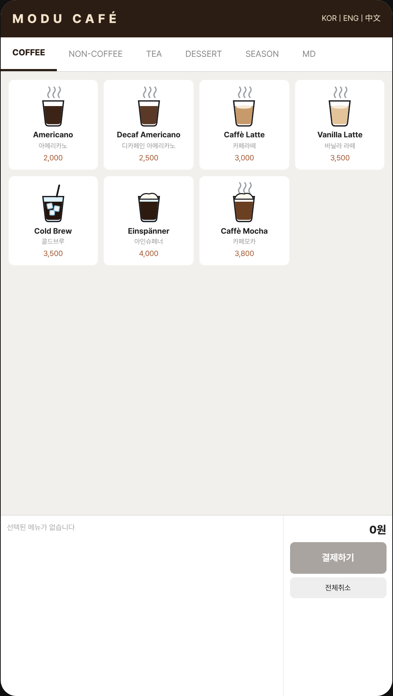
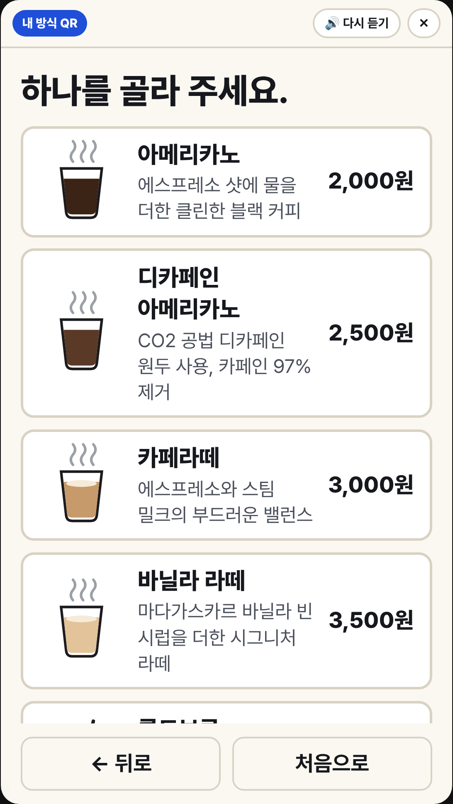
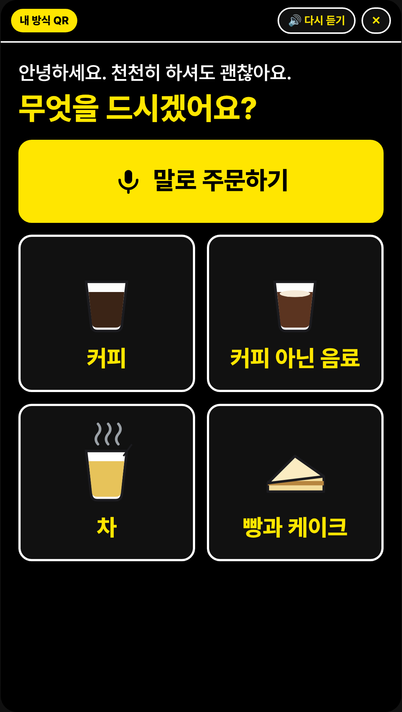
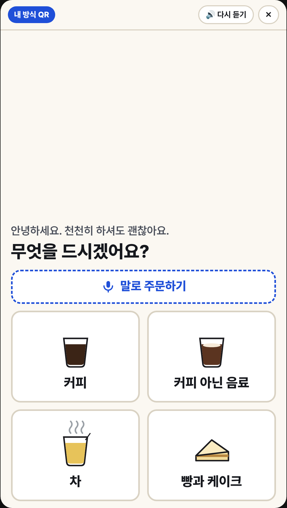
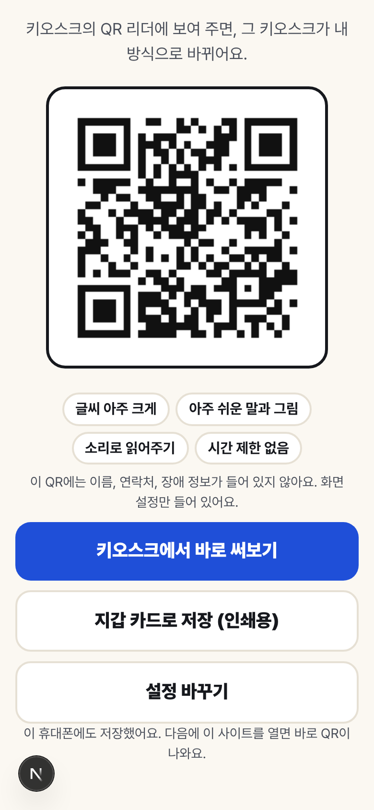
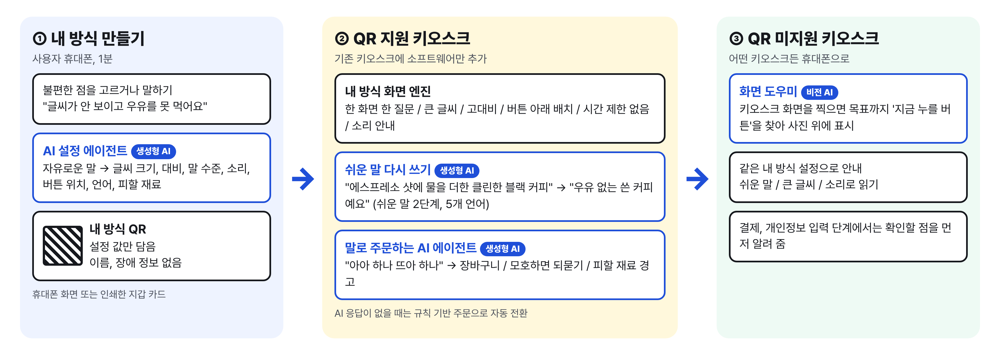
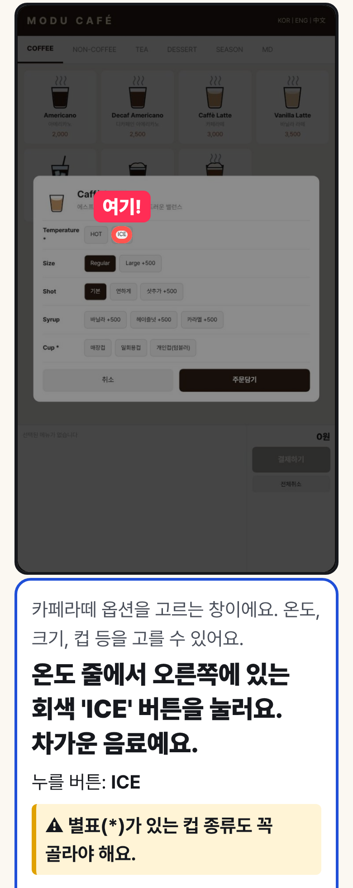
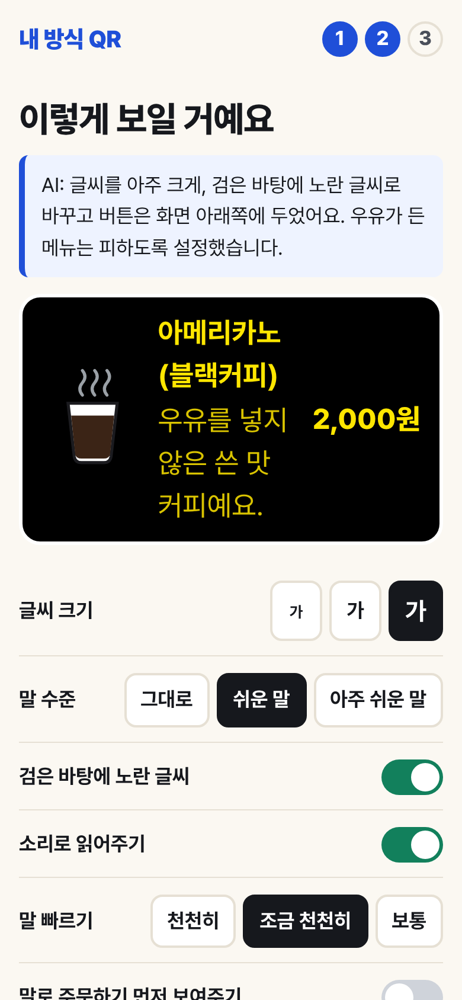

내 방식 QR
생성형 AI가 키오스크 화면을 사람마다 다시 그려 주는 범용 접근성 프로필 패스
QR 하나만 보여 주면 같은 키오스크가 큰 글씨, 쉬운 말, 소리 안내, 말로 주문하기, 낮은 버튼 위치로 바뀝니다. 키오스크 기기를 바꾸지 않고 소프트웨어만 더하는 방식입니다.
| 성명 | 소속 | 역할 |
|---|---|---|
| 이강록 (대표, 1인 참가) | 광운대학교 소프트웨어학부 인공지능전공 | 문제 정의, AI 설계와 개발, 평가셋 구축, 효과 추정, 보고서 작성 |
같은 키오스크, QR을 보여 주기 전과 후





내 방식 QR : 범용 접근성 프로필 패스 (AI 라이프 아이디어 챌린지 수상 후보작을 AI로 구현)

사용 기술: Claude API(텍스트, 비전)와 구조화 출력(도구 호출), 브라우저 음성 합성과 음성 인식, QR 생성과 인식(jsQR), Next.js 웹앱(키오스크 브라우저와 휴대폰에서 설치 없이 실행), Vercel 배포


왼쪽: 화면 도우미 실제 결과 (옵션 창에서 '차갑게'를 원할 때 ICE 버튼 표시, 필수 컵 선택 주의 안내)
가운데: AI 쉬운 말 메뉴
오른쪽: '눈이 침침하고 우유를 마시면 배가 아파요, 휠체어를 타요'를 AI가 설정으로 바꾼 결과
| 검증 항목 | 방법 | 결과 |
|---|---|---|
| 말로 주문 | 50문장 (줄임말, 사투리, 5개 언어, 되묻기 3건)장바구니가 정답과 완전히 같아야 정답 | AI 98% / 규칙 기반 56%평균 응답 1.3초 |
| 화면 도우미 | 8개 화면, 24개 목표AI가 표시한 영역의 중심이 실제 버튼 안이면 적중 | 깨끗한 화면 87.5% / 사진 100%평균 응답 3.8초, 놓친 3건 중 2건은 필수 옵션부터 고르라고 안내 |
| 쉬운 말 | 메뉴 18개, 어려운 말 46개 목록으로 집계원문에 없는 사실을 지어냈는지 별도 AI 검수 | 어려운 말 58개 → 0개설명 18.8자 → 16.6자, 지어낸 사실 36건 중 1건 (검수 후 수정) |
| 말로 설정 만들기 | 자유 발화 20문장 + 처음 보는 문장 10개말한 불편과 관련된 설정을 모두 맞게 골라야 정답 | 1차 80% → 기준 보완 후 100%처음 보는 10문장 100% |
| 주문 시간 추정 | 80대 고령자 1인 사용 가정, 같은 과제KLM 시간값에 고령자 보정, 화면별 선택지 수와 흔한 실수 확률로 계산 (실측 아님) | 약 119초 → 60초말로 주문 약 28초, 예상 실수 1.4회 → 0.2회 |
| 어려움 | 해결 |
|---|---|
| 학습, 평가 데이터가 없음 | 시뮬레이터에서 정답 버튼 좌표를 자동 추출해 평가셋을 만들고, 휴대폰 촬영 조건을 합성했습니다. |
| AI가 메뉴에 없는 사실을 지어낼 위험 | 원문에 없는 사실 금지 규칙과 별도 AI 검수를 두고, 메뉴 변환은 미리 만들어 검수한 뒤 저장해 씁니다. |
| AI 응답이 늦거나 끊기면 키오스크가 멈춤 | 규칙 기반 주문으로 자동 전환하고, 쉬운 말 변환 결과를 저장해 두어 바로 보여 줍니다. |
| 장애 정보는 민감정보 | 장애 유형 대신 '필요한 화면 방식'만 QR에 담고 서버에 저장하지 않습니다. |
| 기기마다 음성 인식 지원이 다름 | 말하기가 안 되면 글로 쓰기, 버튼 선택으로 같은 기능을 씁니다. |
| 다른 언어를 골라도 한국어로 답함 | 베트남어 결과에 한국어가 섞이는 문제를 평가 중에 발견해, 출력 언어를 검사하고 어긋나면 다시 요청하도록 고쳤습니다. |
| '영어 메뉴가 어렵다'를 영어로 바꿔 달라는 뜻으로 오해 | 평가 중 발견해 설정 기준을 보완했고, 처음 보는 문장 10개로 다시 확인했습니다. |
체험 순서: 키오스크 체험 → 예시 프로필(어르신, 저시력, 휠체어, 외국인) 누르기 → 화면 도우미에서 예시 사진으로 안내 받기